Workshops and activities for kids in Turin and around
Workshops, courses and activities for kids and families in Turin, Cuneo and around: ceramics, cooking, storytelling, music and more.
Search all workshops60 activities coming up · updated on 29 October 2026
 thu29octFor familiesWho we’ll be tomorrow: stories for ages 3–4Thursday 29 October, 17:00–18:00Cuneo (CN) · Freewith Biblioteca 0-18 di Cuneo with Noau Officina Culturale
thu29octFor familiesWho we’ll be tomorrow: stories for ages 3–4Thursday 29 October, 17:00–18:00Cuneo (CN) · Freewith Biblioteca 0-18 di Cuneo with Noau Officina Culturale fri30octFor familiesHalloween workshop: creative craftsFriday 30 OctoberCuneo (CN) · 5 €with Cooperativa Il Melograno
fri30octFor familiesHalloween workshop: creative craftsFriday 30 OctoberCuneo (CN) · 5 €with Cooperativa Il Melograno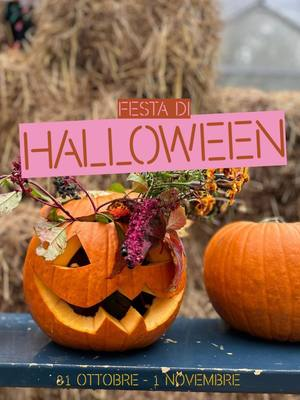
sat31octFor familiesHalloween at the farm: pumpkins and monstersSaturday 31 OctoberMirafiori (TO)with Orti Generali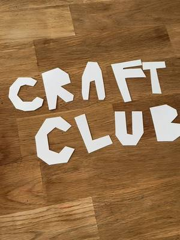
sat31octFor familiesCraft Club and Kids: Halloween craftsSaturday 31 OctoberBorgo San Paolo (TO)with Pangramma- sat31octFor familiesWitches’ Workshop: origami masksSaturday 31 October, 10:00Turin · 20 €with Petites Révolutions
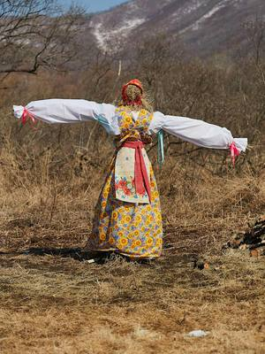
sat31octFor familiesForest guardians: Halloween at the farmSaturday 31 October, 14:00–16:00Falchera (TO) · Freewith Cascina Falchera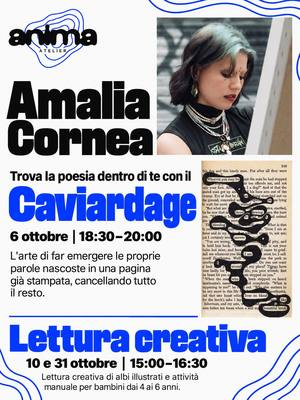
sat31octFor familiesCreative reading: picture books for ages 4–6Saturday 31 October, 15:00–16:30Santa Rita (TO)with Amalia Cornea at Anima Atelier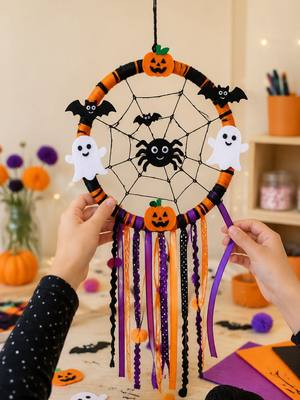
sat31octFor familiesDreamcatchers: a Halloween craft for kidsSaturday 31 October, 15:00–17:00Barriera di Milano (TO) · 20 €with Magazzini Tessili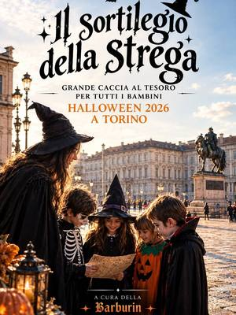
sat31octFor familiesThe witch’s spell: a treasure huntSaturday 31 October, 15:30–17:00Centro (TO) · 15 €with Barburin- sat31octFor familiesHalloween Cake & Chill: cakes for kidsSaturday 31 October, 15:30–17:30Borgaro Torinese (TO)with Limaco’s Lab
- sat31octFor familiesHalloween on Via Trento: crafts and a huntSaturday 31 October, 15:30–18:00Pinerolo (TO)with La Lunaria Gea at 39/ Tramediffuse
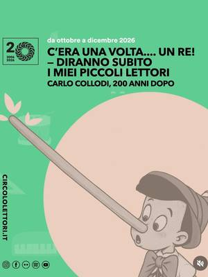
sat31octFor familiesPenne Selvagge: scary stories with PinocchioSaturday 31 October, 16:00–17:30Centro (TO) · 10 €with Merende Selvagge at Circolo dei Lettori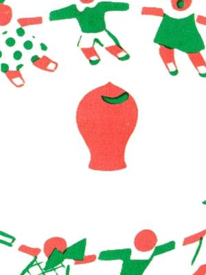
sat31octFor familiesSaving is fabulous: a family afternoonSaturday 31 October, 16:00Centro (TO) · 7 €with Museo del Risparmio e MUSLI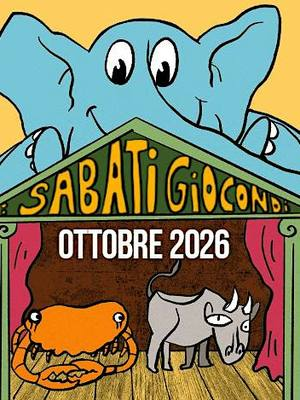
sat31octFor familiesJoyful Saturdays: a miniature building siteSaturday 31 October, 16:30–18:00Nizza Millefonti (TO) · Freewith Casa del Quartiere Barrito- sat31octFor familiesYùrei: a Japanese Halloween taleSaturday 31 October, 17:00–18:00Turin · 15 €with Petites Révolutions
 sat31octPainting and writingCreative Halloween: paint your own t-shirtSaturday 31 October, 17:30–20:00Borgo Po (TO) · 60 €with Si Performance Artistiche at TObed
sat31octPainting and writingCreative Halloween: paint your own t-shirtSaturday 31 October, 17:30–20:00Borgo Po (TO) · 60 €with Si Performance Artistiche at TObed- sat31octDance and movementDragon boat on the Po: Halloween specialSaturday 31 October, 20:30–22:00Centro (TO) · from 29 € · sold outwith Somewhere Tours with Circolo Amici del Fiume
 sun1novFor familiesLet’s make a book: a picture book for kidsSunday 1 November, 10:00–12:00Grugliasco (TO) · Freewith Gloria Tundo at Leumann Hub
sun1novFor familiesLet’s make a book: a picture book for kidsSunday 1 November, 10:00–12:00Grugliasco (TO) · Freewith Gloria Tundo at Leumann Hub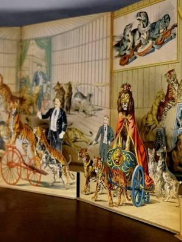
sun1novFor familiesPaper, folds and wonder: pop-up booksSunday 1 November, 16:30Quadrilatero (TO) · 5 €with MUSLI, Fondazione Tancredi di Barolo- from19octFor familiesLalababy: music for little onesfrom Monday 19 October to Monday 9 November, every Monday, 16:45–18:30Cuneo (CN)with Cooperativa Il Melograno
 from20octFor familiesBarbachef: cooking for kidsfrom Tuesday 20 October to Tuesday 15 December, every Tuesday, 17:30–18:30Cuneo (CN) · 80 € for 8 sessionswith Cooperativa Il Melograno
from20octFor familiesBarbachef: cooking for kidsfrom Tuesday 20 October to Tuesday 15 December, every Tuesday, 17:30–18:30Cuneo (CN) · 80 € for 8 sessionswith Cooperativa Il Melograno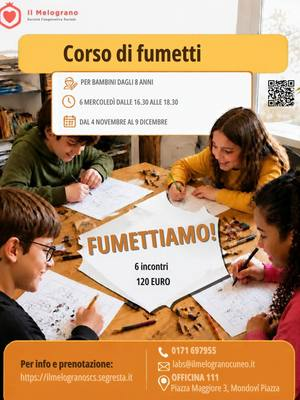
from4novFor familiesLet’s make comics: a course for kidsfrom Wednesday 4 November to Wednesday 9 December, every Wednesday, 16:30–18:30Mondovì (CN) · 120 € for 6 sessionswith Cooperativa Il Melograno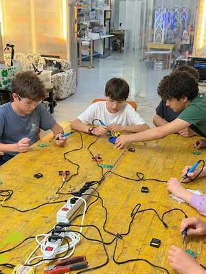
thu5novOtherSaldo! Vol. 1: basic solderingThursday 5 November, 18:00–20:00Lingotto (TO) · from 10 €with Silvio Navaretti at Fablab Torino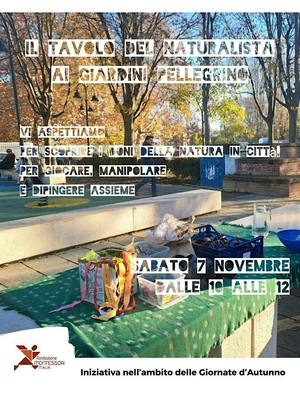
sat7novFor familiesThe naturalist’s table: autumnSaturday 7 November, 10:00–12:30Aurora (TO) · Freewith Spazio MoMag (Fondazione Montessori Italia)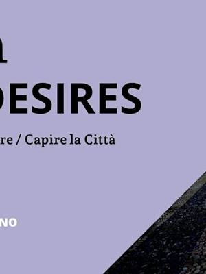
sat7novGamesHacking Monopoly: the city at stakeSaturday 7 November, 10:30–13:00San Salvario (TO) · Freewith Urban Desires 2026 with Collettivo Zeroscena- sat7novCeramicsBreakfast kit: a ceramic mug and embroiderySaturday 7 November, 15:00–17:30San Salvario (TO) · 35 €with Pottery Lab
- sat7novFor familiesCollodi’s mischief: puppet makingSaturday 7 November, 16:00–17:30Centro (TO) · 10 €with Claudia Bellin (Camillo quante storie) at Circolo dei Lettori
 sun8novFor familiesTeens in the kitchen: full menuSunday 8 November, 09:30–12:00Lingotto (TO) · 55 € · sold outwith Eataly Torino Lingotto
sun8novFor familiesTeens in the kitchen: full menuSunday 8 November, 09:30–12:00Lingotto (TO) · 55 € · sold outwith Eataly Torino Lingotto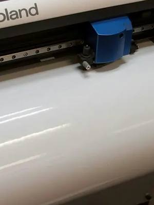
wed11novFor familiesHow To Kids: stickers with a vinyl cutterWednesday 11 November, 18:00–19:30Lingotto (TO) · from 7 €with Fablab Torino- from12novFor familiesBarbachef: cooking for kidsfrom Thursday 12 November to Thursday 3 December, every Thursday, 17:30–18:30Mondovì (CN)with Cooperativa Il Melograno
 from13novFor familiesLalababy: music for little onesfrom Friday 13 November to Friday 4 December, every Friday, 16:45–17:30Cuneo (CN)with Cooperativa Il Melograno
from13novFor familiesLalababy: music for little onesfrom Friday 13 November to Friday 4 December, every Friday, 16:45–17:30Cuneo (CN)with Cooperativa Il Melograno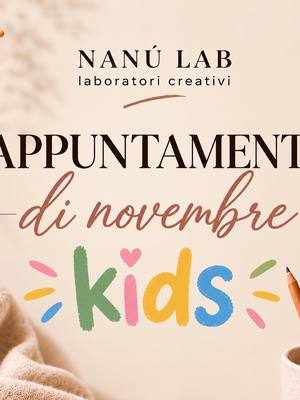
sat14novFor familiesNanù Lab Kids: painted shopping bagSaturday 14 November, 10:00–11:30Pinerolo (TO) · 20 €with Nanù Lab Kids with 123 Stella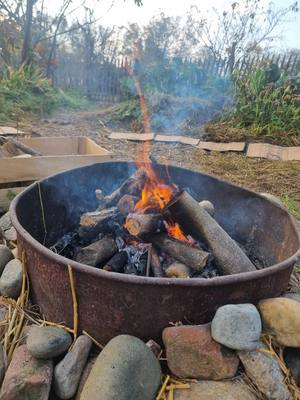
sat14novFor familiesSt Martin’s Day: crafts and chestnut roastSaturday 14 November, 14:30–16:00Mirafiori (TO) · 16 €with Orti Generali sat14novFor familiesKids in the kitchen: DIY dinnerSaturday 14 November, 18:00–20:30Lingotto (TO) · 45 €with Eataly Torino Lingotto
sat14novFor familiesKids in the kitchen: DIY dinnerSaturday 14 November, 18:00–20:30Lingotto (TO) · 45 €with Eataly Torino Lingotto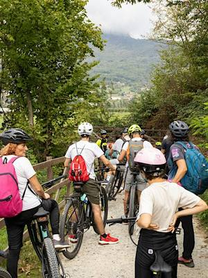
sun15novDance and movementBike ride: to the Bosco del MerlinoSunday 15 November, 09:00–16:00Racconigi (CN) · Freewith Parco del Monviso sun15novFor familiesKids in the Kitchen: cooking in EnglishSunday 15 November, 09:30–11:30Lingotto (TO) · 40 €with Eataly Torino Lingotto with Alessia Rossino
sun15novFor familiesKids in the Kitchen: cooking in EnglishSunday 15 November, 09:30–11:30Lingotto (TO) · 40 €with Eataly Torino Lingotto with Alessia Rossino from17novFor familiesPastrychef: baking for kidsfrom Tuesday 17 November to Tuesday 15 December, every Tuesday, 17:30–18:30Cuneo (CN) · 40 € for 4 sessionswith Cooperativa Il Melograno
from17novFor familiesPastrychef: baking for kidsfrom Tuesday 17 November to Tuesday 15 December, every Tuesday, 17:30–18:30Cuneo (CN) · 40 € for 4 sessionswith Cooperativa Il Melograno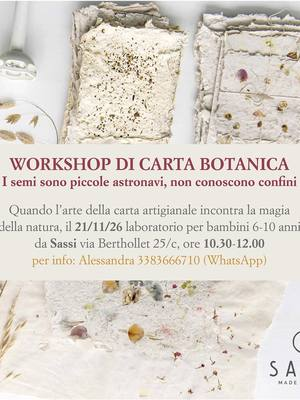
sat21novFor familiesBotanical paper: plantable seed paperSaturday 21 November, 10:30–12:00San Salvario (TO) · 10 €with Claudia Bellin (Camillo quante storie) at Sassi- sat21novFor familiesOcchio a Pinocchio: a clay puppetSaturday 21 November, 16:00–17:30Centro (TO) · 10 €with Dario Benedetto at Circolo dei Lettori
 sat28novFor familiesNanù Lab Kids: the elf doorSaturday 28 November, 10:00–11:30Pinerolo (TO) · 20 €with Nanù Lab Kids with 123 Stella
sat28novFor familiesNanù Lab Kids: the elf doorSaturday 28 November, 10:00–11:30Pinerolo (TO) · 20 €with Nanù Lab Kids with 123 Stella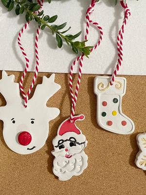
sun29novFor familiesCeramics for kids: Christmas decorationsSunday 29 November, 14:00–18:30Villar Perosa (TO) · 35 €with Simona di Terraferma Ceramiche at Riflessi di Casa- sat5decFor familiesPenne Selvagge: a Christmas storySaturday 5 December, 16:00–17:30Centro (TO) · 10 €with Merende Selvagge at Circolo dei Lettori
 sun13decFor familiesFamily cooking: biscuits for RudolphSunday 13 December, 09:30–11:30Lingotto (TO) · 55 €with Eataly Torino Lingotto
sun13decFor familiesFamily cooking: biscuits for RudolphSunday 13 December, 09:30–11:30Lingotto (TO) · 55 €with Eataly Torino Lingotto sun13decFor familiesTeens in the kitchen: full menuSunday 13 December, 09:30–12:00Lingotto (TO) · 55 €with Eataly Torino Lingotto
sun13decFor familiesTeens in the kitchen: full menuSunday 13 December, 09:30–12:00Lingotto (TO) · 55 €with Eataly Torino Lingotto- sun13decFor familiesFamily cooking: biscuits for RudolphSunday 13 December, 13:30–15:30Lingotto (TO) · 55 €with Eataly Torino Lingotto
- sat19decFor familiesPinocchio and Giannettino: two rascalsSaturday 19 December, 16:00–17:30Centro (TO) · 10 €with Claudia Bellin (Camillo quante storie) at Circolo dei Lettori
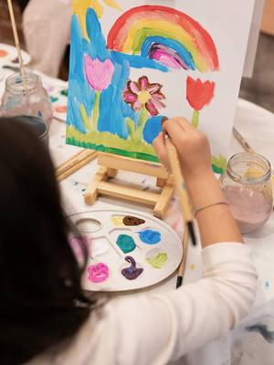
from19janFor familiesCreative kids: an art course for childrenfrom Tuesday 19 January, every Tuesday, 16:30–18:00Cuneo (CN) · 150 € for 6 lessonswith Atelier Crea-Arti- dateto be confirmedOtherCascina Roccafranca: this season’s coursesDate to be confirmedMirafiori (TO)with Cascina Roccafranca
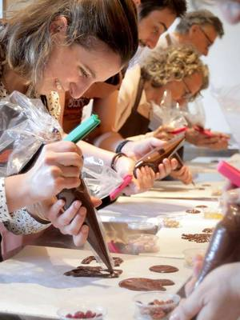
dateof your choiceCookingChoco-Story: chocolate workshopDate of your choiceSan Salvario (TO) · from 39 €with Choco-Story Torino- dateof your choiceFor familiesCreative gym: art for kidsDate of your choiceTurin · 25 € per lessonwith Kreative Club
 dateof your choicePainting and writingNovel Academy: drawing and painting coursesDate of your choiceTurinwith Novel Academy
dateof your choicePainting and writingNovel Academy: drawing and painting coursesDate of your choiceTurinwith Novel Academy- dateof your choiceDance and movementProgetto SLIP: circus and aerial coursesDate of your choiceBarriera di Milano (TO) · from 190 € per yearwith Progetto SLIP
- dateof your choiceMusic and theatreSPLIT Teatro: acting, musicals and singingDate of your choiceMirafiori (TO)with SPLIT Teatro
- dateof your choiceDance and movementStudio21: street dance classesDate of your choiceLingotto (TO)with Studio21 Street Dance School
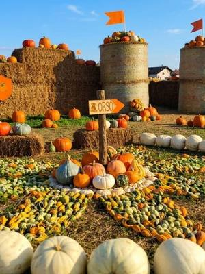
dateof your choiceFor familiesPumpkin Village: paint your pumpkinDate of your choiceFavria (TO) · 15 €with Il Villaggio della Zucca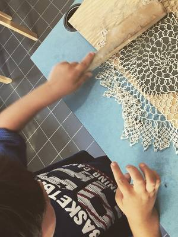
dateof your choiceFor familiesKids’ workshop: clay and sculptureEvery Monday, Wednesday and Friday, 15:00San Salvario (TO) · from 25 € per lessonwith Pottery Lab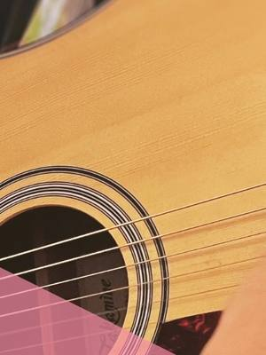
everymonFor familiesBeginner guitar: a course for kidsEvery Monday, 17:00–19:00Mirafiori (TO)with Andrea Marzolla (Tilt Music) at Casa nel Parco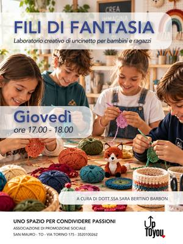
everythuFor familiesThreads of Imagination: crochet for kidsEvery Thursday, 17:00–18:00San Mauro Torinese (TO)with Sara Bertino Barbon at upTOyou- everytuePainting and writingComics course: characters and storiesEvery Tuesday, 17:00–20:00San Mauro Torinese (TO)with Lorenzo Balocco at upTOyou
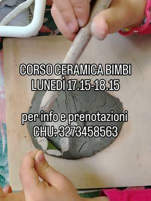
everymonFor familiesKids’ ceramics course: shaping clayEvery Monday, 17:15–18:15San Donato (TO)with Chu Lab